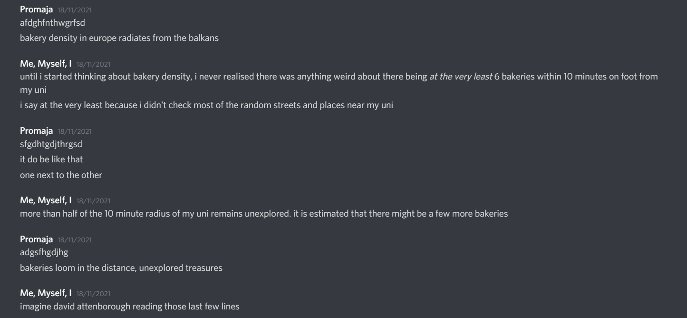
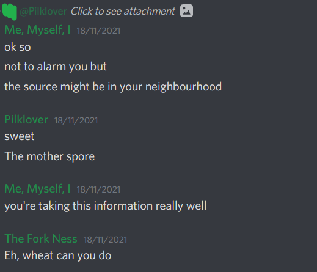

Anyway, I promised I would write this in the form of a scientific paper, so here I am breaking that promise...
Please note: The names of all the people involved in this research have been altered to protect their identities
Also, warning: This post is completely devoid of scientific rigour. If you are not adventurous enough for this, please consider sodding off and reading a boring paper on tensile strength of steel or whatever it is boring people read
The Fascinating Study of Bakery Distribution
I, a Croat, was having an extremely serious and sophisticated conversation with a Serb on the topic of the pandemic and our region's journalism. Failing to find a gentlemen's club good enough for our refined tastes, and on account of my collocutor being a gentlewoman (thus barred from entering an institution of such archaic morals), we settled for something almost as classy: The online communication platform known as "Discord." At some point in this highbrow conversation, we stumbled upon the topic of bakeries. We discussed our experiences with them and how they may differ from the world at large. In this conversation, we noticed something peculiar.
In our conversation with international travellers (as those are, of course, the sort of adventurous people we associate with), we had some conflicting accounts of people's experiences in Germany. A professional paint-drying observer from the United States of America had enthusiastically recounted his experiences in Germany to me. What stood out to him was the astonishing number of bakeries there. They were so common, in fact, he could find them in the most unexpected places, as he had so vividly described.
Yet, the accounts I got from Croats living in Germany differed. When asked about their experiences in Germany, most of them bemoaned the lack of bakeries. I was informed by my collocutor, my associate, my colleague, my fellow researcher (and make no mistake, this is critically important research) that the stories of Serbs living abroad did not differ much from those of Croats. And, tragically, this this issue was not unique to Germany. Indeed, based on the sample size too appropriate for our readers' feeble mind to comprehend, we concluded that the bakery density of various countries decreased the further west or north people went.
But wait, you may ask, who are you to make such sweeping generalisations based on virtually no data?
Excellent question!
...
Moving on.
My fellow researcher speculated that this was a phenomenon centred on the Balkans, with bakery density being the greatest here, falling off with distance.

We quickly realised our data was quite limited and we had no idea about the specifics. We didn't know if bakery density was uniform in the Balkans. Perhaps this phenomenon originated in only ex-Yugoslav countries, or even only certain parts of certain ex-Yugoslav countries. On the other hand, there was the possibility the phenomenon could have originated anywhere in the Balkans. We needed more information.
Thankfully, due to the immense power of the internet, we had an instant line of communication to people from all over the Balkans.
We started with some nice folks from Greece who, unbeknownst to us at the time, would end up being the only source needed to complete our research.
The response to our inquiries was slow at first.
But it eventually began to pick up pace.
As we got more data, we realised that neither Serbia nor Croatia were the source. Whatever was happening was somehow even more intense in Greece.
...
Then, the shocking realisation hit me. We had no confirmation of the origin of the phenomenon being in the Balkans. The data gathered so far left room open for a terrifying possibility: The origin was further east, perhaps in the very heart of Turkey. Faced with the prospect of telling the good folks helping us that the source of their beloved bakeries was Turkey, we decided to keep quiet on this matter.
Thankfully, this ended up not being the case.
Pilklover, as she insisted on being called (doubtlessly due to her love of not porcine or pepsi milk, but the delectable beverage that is milk with pickles), shared possibly the most important piece of information that has been shared in the entire history of communication.
A screenshot of the neighbourhood where she once lived which I, in the interest of protecting her identity, will not be sharing.
The screenshot had no less than 18 bakeries within a 10-minute walking distance. But that wasn't all.
Zooming into the map revealed more bakeries. We dared not zoom in further, but it is believed that, at the epicentre of the bakery phenomenon, which we now know the exact location of, there are infinitely many overlapping bakeries. God knows what happens to the poor fool who crosses the event horizon and enters The Infinibakery.
Pilklover was thrilled.

Wheat can you do indeed.
And that concludes our fascinating story of the bakery phenomenon.
Until next time.
Cheers!